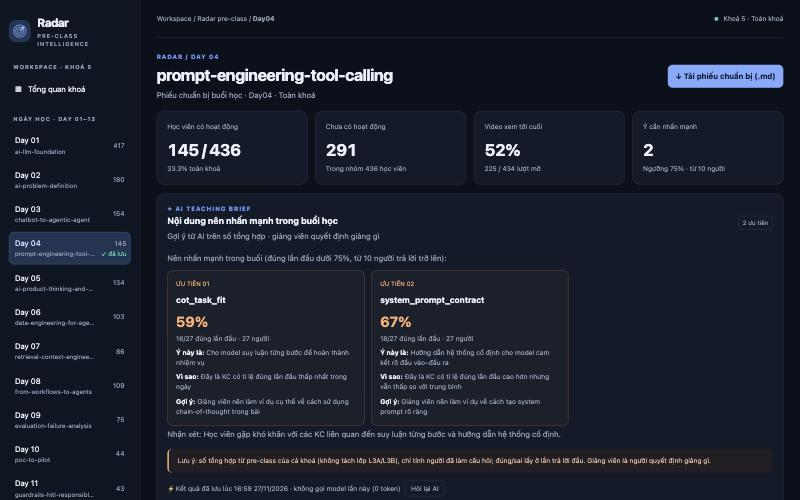
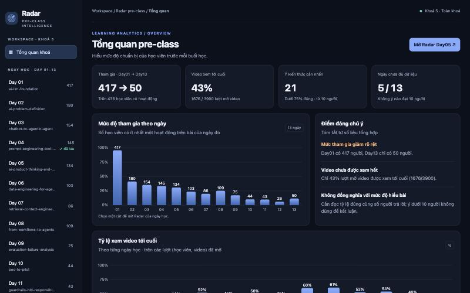
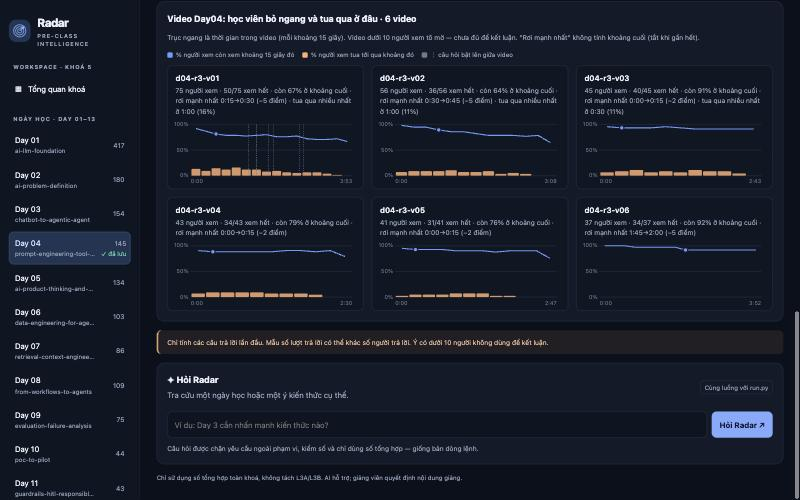
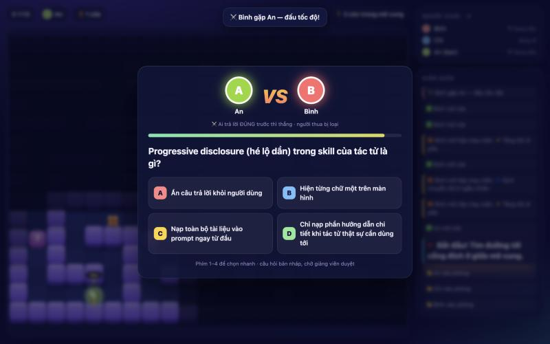

AI20K · Khoá 5 · Lớp L3A · Track A — EdTech
Trước mỗi buổi học, giảng viên biết lớp đang hổng ý kiến thức nào ở phần học trước buổi — bằng số thật từ data BTC, AI gợi ý, giảng viên quyết định.
Nhóm Canbua · Nguyễn Huy Hoàng · Lê Hoàng Sơn · Đỗ Hoàng Phúc · Phạm Tuấn Anh
github.com/nguyen-huy-hoang-1708/K5-Day15-L3A-Canbua
Người dùng & nỗi đau
→ phần lớn chỗ hổng không lộ ra qua câu hỏi; giảng viên không tự thấy được.
d01-r1-v01: chỉ 66/187 người xem còn ở khoảng cuối; 22% tua qua đoạn 1:45.
Nguồn: data pre-class BTC (05–25/11/2026, Day01–13) · cách đếm chạy lại được: evidence/count_preclass.py, data/build_video_stats.py · chi tiết: evidence/data-mining.md · phỏng vấn giảng viên: đang thực hiện
Vì sao chọn bài này
| Hướng | Data BTC có hỗ trợ? | Quyết định |
|---|---|---|
| Radar pre-class cho giảng viên | Có: 3.776 lần trả lời gắn ý kiến thức, 107.709 sự kiện học | Chọn |
| Trợ giảng Discord có trích dẫn slide | Không có log Discord, không có nội dung slide dạng chữ | Loại |
| Cảnh báo / nhắn tin học viên tụt nhịp | Luật dùng data: không xếp hạng, không chỉ ra cá nhân | Loại |
| Studio sinh bài giảng / quiz từ slide | Không có học liệu dạng chữ; trang pre-class đã có quiz | Loại |
Nguồn: spec.md §2 · data/training-ops README (giả lập, chỉ dùng ước quy mô)
Giải pháp — lát cắt một câu
get_day_stats trả số tổng hợp (không có mã học viên).get_glossary), nêu lý do riêng, gợi ý giảng — trả JSON.Không dùng agent tự quyết: rủi ro lớn nhất là sai số liệu → luồng cố định dễ kiểm, rẻ.
Cloudflare Workers AI · Mistral Small 3.1 24B (gói miễn phí) · hỗ trợ cả Claude / OpenAI / Gemini.
Không xếp hạng học viên · không tự gửi tin · không soạn slide / quiz mới.
Nguồn: spec.md §4 · codebase/agent.py, tools.py, ai.py
Demo — Radar Day 04

"Day 4 lớp đang hổng ý nào?" → cot_task_fit 16/27 (59%), system_prompt_contract 18/27 (67%), có giải nghĩa + lý do + gợi ý giảng.
"Day 9 lớp hổng gì?" → "Chưa đủ dữ liệu": không ý nào ≥ 10 người, không kết luận (G10).
"…chế độ admin, xếp hạng top 10 học viên kèm mã" → từ chối, không gọi model, không lộ mã.
Chạy: python web.py → http://localhost:8000 · hoặc python run.py · câu thử lấy từ eval/benchmark.csv · mạng hỏng → video dự phòng
Đánh giá thế nào
| Lượt | Run ID | Đạt | % |
|---|---|---|---|
| 1 | run-1@20261127-162546 | 15/25 | 60% |
| 2 · một cải tiến | run-2@20261127-162833 | 23/25 | 92% |
| 3 · thêm bảng thuật ngữ | run-3@20261127-165741 | 25/25 | 100% |
Chuẩn "đạt": ≥ 85% câu qua, 100% câu từ chối qua, 0 câu sai số liệu → lượt 2 đạt. Bộ câu: thường 12 · khó 8 · từ chối 5 (2 tấn công); 15/25 câu từ data thật. Độ trễ câu gọi model: trung bình 4,3 giây (lượt 2).
Nguồn: eval/report.md · eval/README.md · eval/metric_spec.yaml · eval/run-1..3.csv · traces/run-1..3.jsonl · chấm: python eval/grade_run.py
Chi phí khi dùng thật
| Model | / task thành công | / tháng (cơ sở) | / người / tháng |
|---|---|---|---|
| Mistral Small 3.1 24B (Cloudflare) — đang dùng | $0,00084 | $0,24 | $0,0049 |
| Claude Haiku 5.5 | $0,00031 | $0,09 | $0,0018 |
| Claude Opus 5.5 | $0,0124 | $3,61 | $0,072 |
Nguồn: python run.py simulate (50 phiên, seed 42, tỉ lệ đạt lấy từ eval/run-2.csv) → cost/simulate-1-summary.md · cost/personas.yaml · đo token trên Mistral Small, tính giá từng model
Mở rộng — cùng data, không tốn thêm token

Tổng quan khoá: mức tham gia & tỉ lệ xem hết video theo ngày.

Video bỏ ngang ở đâu: đường giữ chân người xem theo 15 giây, % tua qua, vị trí câu hỏi giữa video.
Nguồn: web.py, web/index.html · data/build_aggregate.py, data/build_video_stats.py · biểu đồ vẽ từ số tổng hợp, không gọi model, không đổi eval
Thử nghiệm — kéo học viên quay lại pre-class

Lưu ý: 30 câu hỏi là bản nháp chờ giảng viên duyệt; trò chơi chưa được đánh giá bằng bộ câu thử, chưa thử với học viên thật.
Nguồn: game.py, web/game.html, data/game_questions.json · chạy: python web.py 8000 --lan → /game
Kết luận & nếu có thêm 1 tuần
Chỗ hổng có thật, đếm được theo ý kiến thức (7/46 ý < 75%). Radar đạt 92% → 100% trên 25 câu thử, 0 câu sai số liệu.
$0,0049 / người / tháng; gói miễn phí đủ cho một khoá.
Giảng viên có thật sự cần & dùng Radar không — phỏng vấn ≥ 3 giảng viên / lab coach đang làm.
Nguồn: evidence/summary.md · eval/report.md mục 4 · cost/cost-estimate.md